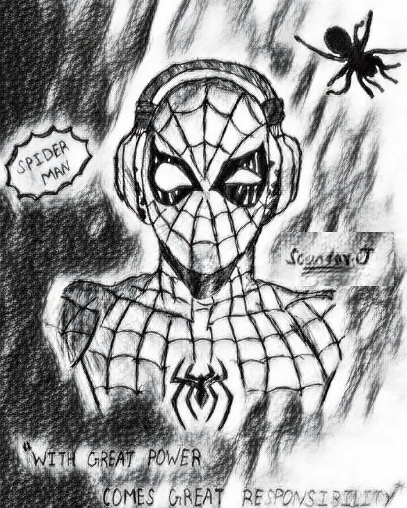

- Homhghghheee
- About
- Powers
- Films
- Me

Spider-Man is one of the most iconic superheroes in Marvel Comics, created by Stan Lee and Steve Ditko in 1962. His importance and relevance in pop culture are undeniable, being a symbol of overcoming, responsibility and humanity. The character has won over millions of fans around the world with his exciting stories, personal dilemmas and unique powers. His journey as a hero, balancing the life of Peter Parker, continues to inspire generations, making him a timeless cultural icon with a significant impact on the world of entertainment.
This is just a small tribute to my favorite superhero, Spider-Man and all marvel, spiderman fans.